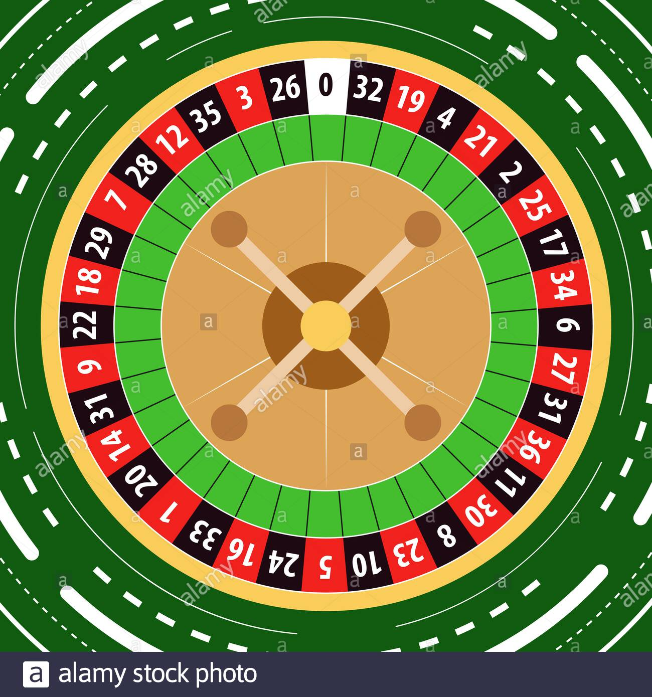

সম্ভাব্যতা কি? সোজা বাংলায় বললে, কোন ঘটনা ঘটা বা না ঘটার সম্ভাবনার পরিমাপ ই হলো সম্ভাব্যতা ।
এখন সম্ভাবনার কথা শুনলেই, আমাদের ব্রেইন এ একটা কয়েন/মুদ্রা লাফালাফি শুরু করে আর হেড অথবা টেইল পড়তে থাকে। আচ্ছা! তাহলে করেই ফেলি সেই জাতীয় প্রশ্ন ঃ একটা কয়েন নিক্ষেপ করলে হেড অথবা টেইল পড়ার সম্ভাব্যতা কত ? উত্তর টা সবার ই মুখস্ত তাই তো ? সম্ভাব্যতা = ১/২ অথবা ৫০% । তাহলে সম্ভাবনার বিষয় টা কি এখানেই শেষ ? না এখান থেকে আসলে শুরু সম্ভাবনার আরেক নতুন থিওরি । যেটা আমাদের আজকের আলচ্য বিষয় -> Law of Large Number
আচ্ছা্ হেড বা টেইল পড়ার সম্ভাব্যতা ১/২ অর্থাৎ, প্রতি ২ বার এ একবার হেড এবং একবার টেইল পড়বে। কিন্তু এমন তো হয় যে আমি ২ বার টস করলাম ২বার ই হেড পড়লো অথবা ২বার ই টেইল পড়ল? তাহলে সম্ভাবনার দাম থাকলো কি? এখানেই সম্ভাব্যতা পরিচয় ঘটায় নতুন একটি থিওরীর -> Law of Large Number । থিওরি টা বলে যে,আমরা যদি অনেক বড় সংখায় পরীক্ষা করি তাহলে ফলাফল সম্ভাবনার ফলাফলের কাছাকাছি হবে। পরীক্ষা সংখ্যা যত বড় হবে,ফলাফল ততই নিখুত হবে। অর্থাৎ, আমি যদি ২বার টস না করে ১০০ বার টস করি,তাহলে হেড পড়বে প্রায় ৫০ বার টেইল পড়বে প্রায় ৫০বার । প্রায় বলতে অনুপাত টা ৪০/৫০ অথবা ৪৫/৫৫ ও হতে পারে। এখন আমরা যদি পরীক্ষা সংখ্যা বাড়াই তাহলে ফলাফল সম্ভাবনার আরো কাছাকাছি যাবে। এটাই Law of Large Number ।
এখন এটা একটু পরীক্ষা করে দেখা যাক। এই ওয়েবসাইট এ নাম্বার অফ টস এ যতবার টস করতে চাও তা বসিয়ে এপ্লাই বাটন এ ক্লিক করো। দেখো টস সংখ্যা যত বাড়ানো হচ্ছে ততি ৫০% এর কাছকাছি ফলাফল যাচ্ছে ।
আমরা ক্যাসিনোর নাম অনেকেই শুনেছি। ক্যাসিনোর ব্যাবসা ও কিন্তু চলে এই Law of Large Number এর উপর ভিত্তি করে। ক্যাসিনোর গেইম এ এরকম একটা স্পিনার এ ৩৮ টা সংখ্যা ঘুরতে থাকে। তুমি যে সংখ্যার উপর বেট করবা,যদি বল সেইটার উপর এ যায় তাহলে তুমি জিতে গেলা,ক্যাসিনো তোমাকে $৩৫ পে করবে। কিন্তু এখানে তোমার জিতার সম্ভাবনা কত? মোট সংখ্যা = ৩৮টা, ফলাফল আসবে ১টা সংখ্যা অর্থাৎ সম্ভাবনা = ১/৩৮। যা বোঝাই যাচ্ছে অনেক কম।

কিন্তু এমন তো হতে পারে তুমি পরপর ৪-৫ বার জিতে গেলা অথবা ২০-২৫ বার জিতে গেলা। কিন্তু এতে কি ক্যাসিনোর লস হয়ে গেল?তোমার এত বার জিতা দেখে ক্যাসিনোর টেনশন করার কিছু আছে? না নেই। কারণ ক্যাসিনো জানে হিসাব টা যখন বড় সংখায় হবে লাভবান ক্যাসিনোই হবে। কারন তোমার জিতার সম্ভাবনা ১/৩৮ আর ক্যাসিনোর জিতার সম্ভাবনা ৩৭/৩৮ অর্থাৎ, গড়ে প্রতি ৩৮ বার এ ৩৭ বার ই ক্যাসিনো জিতবে ।
To know more, search on google "Law of Large Numbers"